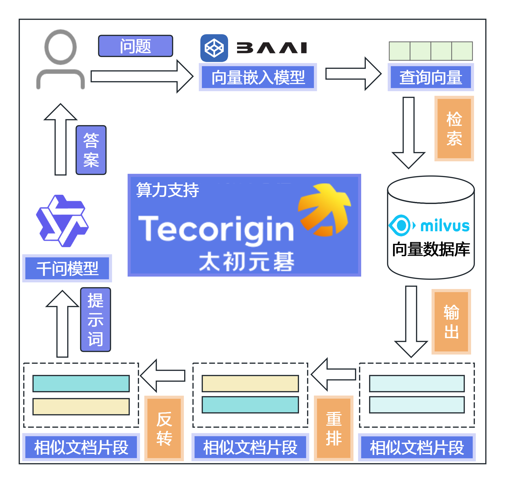
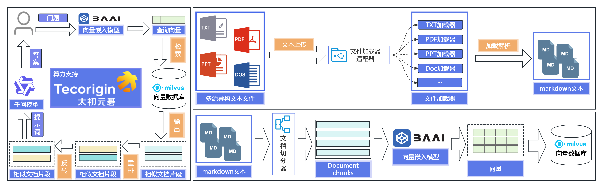
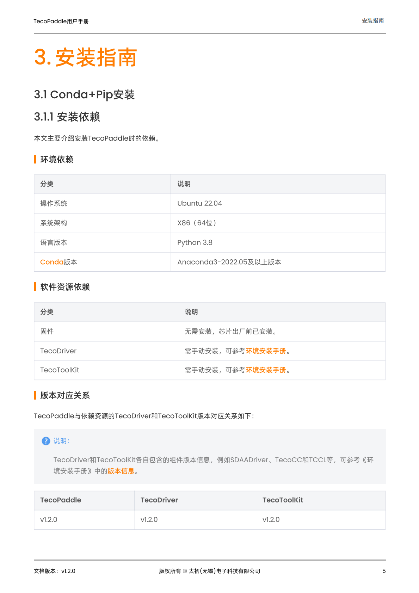
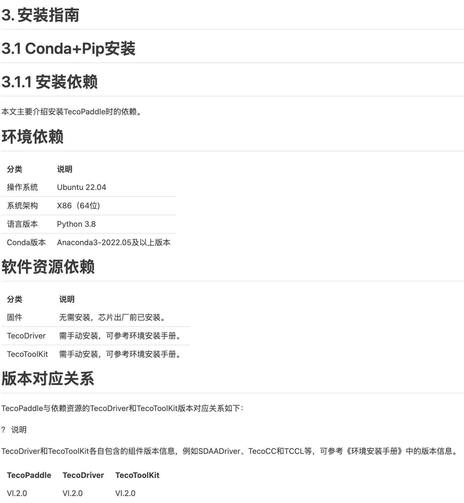
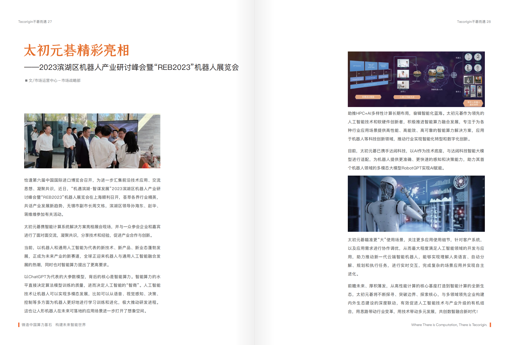
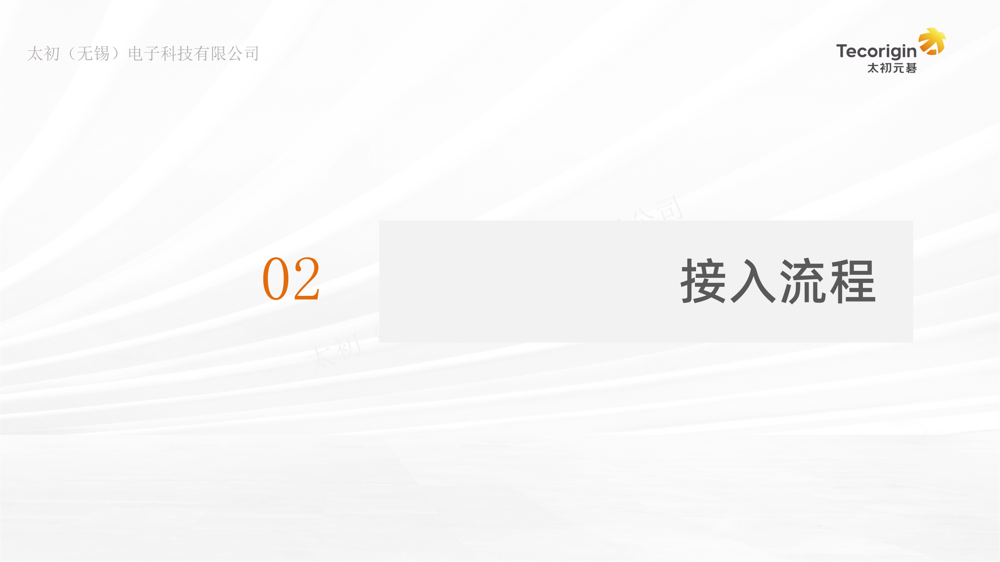
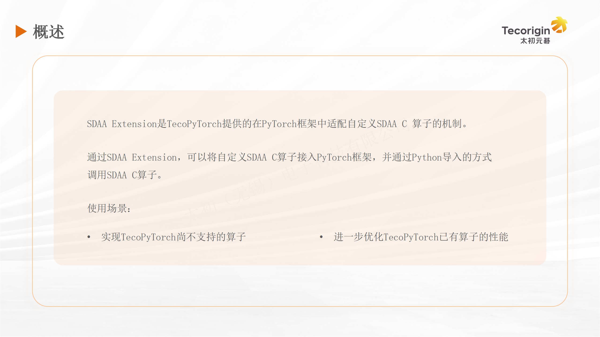
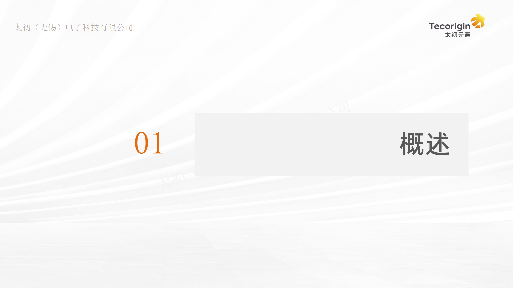
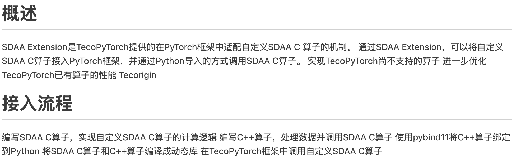
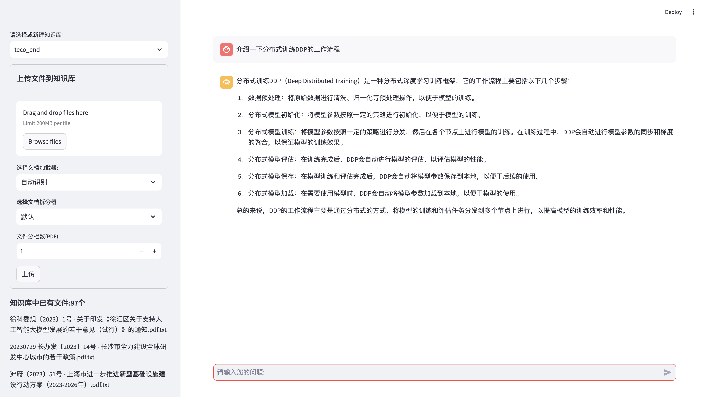

PROBLEM
多源文档的版式
会破坏语义顺序
PDF 双栏、PPTX 布局与图片型材料的文本组织差异显著；若直接读取，容易出现阅读顺序错误、上下文切分失真与检索证据缺失。
05 · COMPETITION PROJECT
面向多源异构文档设计自动化 RAG 流程：从版式感知的加载器，到结构切分、混合检索与答案自校正，提升知识库问答的可靠性。

PROBLEM
PDF 双栏、PPTX 布局与图片型材料的文本组织差异显著；若直接读取，容易出现阅读顺序错误、上下文切分失真与检索证据缺失。
METHOD
实现 PDF→Markdown、PDF 分栏、PPTX、TXT 等加载器，结合 Markdown / 中文标题 / PPTX 切分器；以多查询 RRF、向量混合检索、重排和二次检索组成问答链路。
RESULT
获得太初 RAG 大模型开发任务挑战赛第 3 / 314。竞赛汇报中，系统得分由原始框架的 0.6318 提升至最终方案的 0.6950。
DOCUMENT UNDERSTANDING
原始 PPT 将同一文档解析流程中的材料放在同一页；网页沿用该逻辑，将“PDF 保序”和“PPTX 结构解析”分别组合，方便连续阅读。









TECHNOLOGY
文档处理MagicPDF · PaddleOCR · pdfplumber · pptx2md
检索链路bge-large-zh-v1.5 · bge-reranker-large · HNSW · RRF
策略参数Top-K 20 · Chunk 600 / Overlap 200 · 二次检索 · 自校正